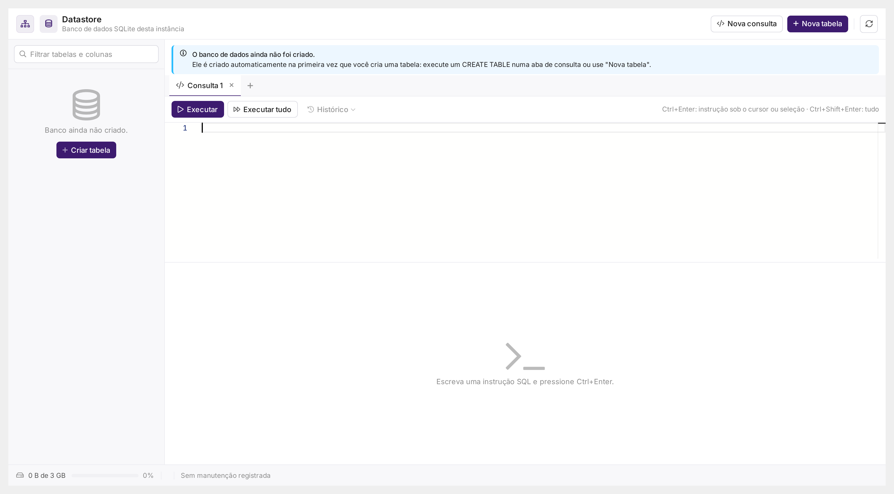

Datastore: banco de dados próprio da instância
Um banco SQLite exclusivo da sua instância para guardar dados que o atendimento precisa consultar ou registrar — usado nos fluxos de URA e automação, nos relatórios personalizados, nos assistentes de IA e nas extensões.
1. Quando o Datastore resolve
O Datastore existe para o dado que não cabe no cadastro padrão do produto. Ele é um banco relacional completo, com tabelas, índices, visões e gatilhos, gravado no servidor da instância — não no navegador e não no seu ERP. Quem consulta não percebe que existe um SQL por trás: o fluxo recebe o resultado em variáveis comuns.
| Cenário | O que fica no Datastore | Onde é usado |
|---|---|---|
| Consultar limite ou saldo antes de liberar um pedido | Tabela de clientes com documento, limite, saldo e data de atualização | Elemento de consulta dentro da URA ou automação da fila |
| Estoque próprio por loja, que o catálogo do produto não controla | Tabela de estoque com código do item e quantidade por loja | Fluxo de pedido e relatório de reposição |
| Registrar cada solicitação que passa pelo robô, para auditoria | Tabela de log com protocolo, telefone de origem, etapa e horário | Elemento de escrita no fluxo; conferência em consulta SQL |
| Relatório que junta dado do atendimento com dado externo | Tabela carregada por script, indexada pelas chaves de junção | Elemento de relatório com fonte SQLite |
| Responder pergunta de negócio a um assistente de IA | Tabela com a métrica já consolidada | Ferramenta de Datastore do assistente |
estoque_, crm_, log_) para não colidir com o trabalho de outra equipe.
2. Onde fica na tela
A tela do Datastore fica em Configurações › Datastore — os dois elementos de fluxo que a usam dependem do pacote de relatórios personalizados da instância. A tela reúne o editor de consultas, a criação de tabelas e o consumo de espaço. Quando o pacote não está no plano, a rota não abre; quando o pacote está ativo mas nenhuma tabela foi criada, a tela explica que o arquivo nasce no primeiro CREATE TABLE.

- Nova consulta abre outra aba de SQL, sem apagar a anterior.
- Nova tabela abre um assistente de criação — útil para quem não quer escrever o
CREATE TABLEà mão. O banco passa a existir na primeira tabela criada por qualquer um dos dois caminhos. - Consumo mostra banco + WAL contra o teto; a manutenção automática aparece como “última manutenção”.
3. Estado do banco e ciclo de vida
Antes de qualquer outra coisa, vale saber o que existe. O estado responde cinco perguntas: o pacote está ligado? o arquivo já existe? quanto ocupa? quando houve manutenção? há banco na lixeira?
| Campo | O que significa na prática |
|---|---|
enabled | O pacote “Relatórios personalizados e Datastore” está ligado na instância. Desligado, qualquer operação devolve DATASTORE_001. |
exists | O arquivo foi criado. Falso significa que ainda não houve nenhum CREATE — e qualquer instrução que não seja CREATE responde DATASTORE_002. |
sizeBytes / walBytes / maxBytes | Consumo do arquivo, do journal WAL e o teto do plano. Ao encostar no teto, escritas passam a ser recusadas com DATASTORE_004 — recusa definitiva, não é lentidão. |
lastMaintenance | Última manutenção automática (compactação/limpeza). Nulo quando nunca rodou. |
trash | Banco guardado na lixeira porque o pacote ficou desligado há menos de 120 horas. Religar o pacote no prazo restaura o mesmo arquivo; passado o prazo, ele é descartado. |
4. O que o motor permite
É SQLite 3, com as travas abaixo. Elas valem igual para a tela, para os elementos de fluxo, para os relatórios, para os assistentes e para as extensões.
- Permitido: tabelas
STRICTeWITHOUT ROWID, índices, visões, gatilhos, chaves estrangeiras,json_eachpara listas, expressões e funções nativas do SQLite. - Proibido em todo acesso:
ATTACH/DETACH,VACUUM,load_extension, PRAGMA de escrita (excetoforeign_keysedefer_foreign_keys) e qualquer leitura de arquivo do servidor. - Reservado ao sistema: tabelas e objetos com prefixo
_omni_esqlite_não podem ser lidos nem alterados. - Concorrência: uma operação de escrita por vez. Chamadas simultâneas esperam a vez; passando do tempo, recebem
DATASTORE_009(ocupado, tente de novo).
5. Preparar o banco com um script
A preparação (criar tabelas, índices, visões, gatilhos) é feita pelo elemento Script do Datastore (datastoreScript, tipo 159) ou pelo assistente “Nova tabela”. O elemento aceita várias instruções separadas por ponto e vírgula e roda tudo dentro de uma transação aberta por ele: se uma instrução falhar, nenhuma é gravada. Por isso BEGIN, COMMIT e ROLLBACK no nível do script são recusados — a transação já é dele.
preparar_estoque: datastoreScript resultVariableName="setup" sql="
CREATE TABLE IF NOT EXISTS estoque_loja (
loja TEXT NOT NULL,
sku TEXT NOT NULL,
quantidade INTEGER NOT NULL DEFAULT 0,
atualizado_em TEXT DEFAULT (datetime('now')),
PRIMARY KEY (loja, sku)
) STRICT;
CREATE INDEX IF NOT EXISTS estoque_sku ON estoque_loja(sku);
"
-> fim- Não use variáveis nem parâmetros aqui:
{{...}}no camposqlé recusado na gravação. Dado do atendimento entra pelo elemento de consulta, sempre como parâmetro. - Escreva com
IF NOT EXISTS/IF EXISTSpara o script poder rodar de novo sem erro. - O uso típico é uma automação executada uma única vez, ou um elemento no início da URA que garante a estrutura antes de consultar.
- O resultado traz
setup_changes(linhas alteradas) esetup_error(vazio em sucesso).
6. Consultar e gravar dentro do fluxo
O elemento Consultar o Datastore (datastoreQuery, tipo 158) executa uma instrução: SELECT (inclusive WITH), INSERT, UPDATE, DELETE, upsert com ON CONFLICT e RETURNING. Não executa DDL nem controle de transação — para isso existe o script. O elemento tem saída única: o fluxo sempre segue, e o desfecho é lido nas variáveis.
A regra que evita a maior parte dos defeitos: valor de variável nunca entra no texto do SQL. Escreva o marcador (:nome, @nome, $nome) e informe o valor em params. O conteúdo — inclusive texto digitado pelo cliente — é ligado ao prepared statement e não pode virar SQL.
consulta_limite: datastoreQuery sql="SELECT limite, saldo FROM clientes WHERE cpf = :cpf" params=[{name: "cpf", value: "{{chat_client_document}}"}] resultMode="first" resultVariableName="cliente"
confere_erro: varCondition value="{{cliente_error}}" {
case falha_de_banco conditionOperator="!=" conditionValue="" {
aviso_falha: message text="Não consegui consultar seu cadastro agora. Vou chamar um atendente."
fim_falha: terminate reason="Falha no Datastore"
}
else {
confere_cadastro: varCondition value="{{cliente_count}}" {
case nao_encontrado conditionOperator="=" conditionValue="0" {
aviso_sem_cadastro: message text="Não localizei seu cadastro. Vou chamar o time comercial."
fim_sem_cadastro: terminate reason="Cliente sem cadastro"
}
else {
responde: message text="Seu limite disponível é {{cliente.limite}}."
}
}
}
}| Campo | O que faz |
|---|---|
sql | Uma instrução, até 50.000 caracteres. Sem {{...}}, sem DDL, sem BEGIN. |
params | Até 50 valores. Todos com name (casando o marcador) ou todos posicionais com ?, na ordem — não misture os dois. Um valor que é exatamente uma expressão mantém o tipo (número, texto, nulo; lista e objeto vão como texto JSON); com texto em volta vira texto. type: "number" força número (aceita vírgula decimal, vazio vira nulo) e type: "text" força texto. |
resultMode | rows (padrão): lista de objetos, uma por linha, para percorrer com loop ou ler {{nome[0].coluna}}. first: objeto da primeira linha ({{nome.coluna}}). value: primeira coluna da primeira linha — ideal para SELECT count(*). none: não grava resultado (escritas). |
maxRows | Só no modo rows: 1 a 1000, padrão 100. Passou disso, corta e marca _truncated. |
resultVariableName | Nome base das variáveis. Só letras sem acento, números e sublinhado, até 80 caracteres — e nenhum derivado pode coincidir com variável de sistema. |
Cada execução grava seis variáveis. Elas são reescritas sempre, mesmo quando a instrução falha — é isso que permite tratar o erro dentro do próprio fluxo:
| Variável | Conteúdo |
|---|---|
nome | Resultado conforme o resultMode. |
nome_count | Linhas lidas. Zero é o gatilho natural para o ramo “não encontrei”. |
nome_changes | Linhas alteradas por INSERT/UPDATE/DELETE. |
nome_last_id | Rowid da linha inserida; vazio quando não é INSERT. |
nome_truncated | 1 quando havia mais linhas do que o limite. |
nome_error | Vazio em sucesso, ou o código DATASTORE_xxx da falha. |
varCondition sobre {{nome_error}} diferente de vazio separa falha de banco de “não encontrei”, que é {{nome_count}} igual a zero. Sem esse ramo, uma tabela inexistente e um cliente sem cadastro produzem a mesma mensagem para o cliente.
7. Exemplo completo: do zero ao atendimento que consulta o banco
O caso: uma loja quer que o cliente consulte, pelo WhatsApp, quantas peças de um SKU existem na loja dele. Se o SKU não estiver na tabela, a conversa vai para o time comercial.
- Crie a estrutura em uma automação executada uma vez (ou pela aba de consulta): o script do item 5, com
estoque_loja (loja, sku, quantidade). - Carregue os dados com um script de carga — ou pela importação do seu ERP, gravando no mesmo formato. Sempre com
IF NOT EXISTSquando o comando for de criação, e comON CONFLICTquando a carga puder repetir. - Na URA da fila, colete a loja e o SKU do cliente (
questionouoptions) e guarde nas variáveis que o fluxo já usa. - Consulte com
resultMode="value"emaxRowsdesnecessário — o retorno é um número só:estoque: datastoreQuery sql="SELECT quantidade FROM estoque_loja WHERE loja = :loja AND sku = :sku" params=[{name: "loja", value: "{{loja_escolhida}}"}, {name: "sku", value: "{{sku_informado}}"}] resultMode="value" resultVariableName="qtd" - Trate os três desfechos:
qtd_errordiferente de vazio → mensagem técnica e transferência para suporte;qtd_countigual a zero → “não trabalho esse item nesta loja” e transferência para o comercial; caso contrário, responda com{{qtd}}. - Registre a consulta com um segundo elemento, agora de escrita, na mesma tabela de log:
INSERT INTO log_consulta (protocolo, sku, quantidade) VALUES (:p, :s, :q)comresultMode="none". O protocolo vem de{{chat_protocol}}. - Confira no editor: rode
SELECT * FROM log_consulta ORDER BY rowid DESC LIMIT 5na aba de consulta. Se a linha do atendimento de teste aparece, o caminho inteiro está ligado.
8. Pela API e pelo MCP
As mesmas operações existem fora do fluxo, para carga, conferência e integração. A diferença de comportamento entre elas é o que evita acidente em produção.
| Ferramenta | O que faz | O que recusa |
|---|---|---|
datastore_status | Estado do banco: existe, tamanho, teto, manutenção, lixeira. Não abre o banco. | — |
datastore_list_tables | Tabelas e visões com número de colunas, índices, gatilhos, STRICT/WITHOUT ROWID e estimativa de linhas. | — |
datastore_describe_table | Colunas (tipo, obrigatoriedade, padrão, chave), índices, chaves estrangeiras, gatilhos e o CREATE original. Nome exato, com a caixa como foi gravado. | Tabela inexistente. |
datastore_query | Uma instrução de leitura: SELECT, WITH ... SELECT e PRAGMA de leitura (table_info, index_list, foreign_key_list, quick_check). | Qualquer escrita, DDL ou transação — DATASTORE_003, recusado pelo motor. |
datastore_execute | Acesso total: escrita, DDL, índices, visões, gatilhos, transações e também leitura. multi: true roda um script inteiro. | ATTACH, VACUUM, load_extension, PRAGMA de escrita e objetos _omni_*/sqlite_*. |
datastore_create_download_url | URL de uso único, sem autenticação, válida por 10 minutos, para baixar uma cópia consistente do .sqlite. | Banco inexistente. |
datastore_querydevolvecolumns,rows(arrays na ordem das colunas),rowCountetruncated. O teto émaxRows(padrão 200, até 10.000) ou o tamanho da resposta — refine comWHERE,LIMITeOFFSET.- Inteiro fora do intervalo seguro do JavaScript vem como texto;
BLOBvem como{"$blob": base64}; célula acima de 64 KB vem resumida em{"$truncatedText"|"$truncatedBlob", "length"}— leia em partes comsubstr(). - Em
datastore_execute,paramsvale para uma instrução: commulti: trueele não é aplicado. Transação deixada aberta é desfeita no fim e a resposta trazrolledBack: true. DROPeDELETEnão têm desfazer. Antes de rodar em massa, baixe a cópia do banco pela URL de download.
9. Relatórios com fonte SQLite
Um elemento de relatório personalizado pode ter o Datastore como fonte, em vez de um cubo. Isso permite cruzar dado do atendimento com tabela própria sem sair da plataforma. A configuração vai no dataConfig do elemento:
{
"source": "sqlite",
"sqlite": {
"sql": "SELECT l.loja, COUNT(*) AS consultas FROM log_consulta l WHERE l.dia BETWEEN :de AND :ate GROUP BY l.loja",
"params": [
{"name": "de", "source": "filter", "filterKey": "periodo", "part": "from"},
{"name": "ate", "source": "filter", "filterKey": "periodo", "part": "to"}
]
}
}- Uma única instrução de leitura. Escrita é recusada pelo motor.
- Parâmetros são nomeados (
:nome,@nome,$nome) —?posicional não é aceito neste caminho. - Cada parâmetro declara de onde vem o valor:
source: "filter"comfilterKeydo filtro global do relatório, ousource: "fixed"com valor fixo. - Do filtro de período,
partescolhe o pedaço:from(primeiro dia),to(último dia, inclusive) outoExclusive(dia seguinte — use com<). Em faixa numérica,min/max; em seleção múltipla,jsonpara usarcol IN (SELECT value FROM json_each(:filas)); em seleção simples,value. required: falseliga nulo quando o filtro está vazio; sem isso, o filtro é obrigatório.
reports_run_sql executa o SQL de um elemento (ou de um relatório já gravado, por id e elementId) e devolve as colunas detectadas e as linhas. Envie {sql, bindings, globalFilters} para simular exatamente o que a tela faria, inclusive com os filtros preenchidos. Exige administrador e o pacote ligado.
10. Assistentes de IA e extensões
Dois consumidores pedem acesso explícito, cada um com o seu vocabulário.
Assistente de IA — a ferramenta datastore do assistente é configurada por quatro chaves e uma lista de tabelas:
| Chave | Padrão | Efeito |
|---|---|---|
readOnly | 1 | Só leitura. Com 0, o assistente pode escrever. |
allowDDL | 0 | Só tem efeito com readOnly: 0. Com tabelas restritas, libera apenas tabelas e índices da lista — sem visões nem gatilhos. |
allTables | 0 | Falso = o assistente só enxerga as tabelas marcadas em schema. |
schema.tables[] | — | {name, enabled, description}. O nome aceita prefixo curinga (estoque_*); a description é o que o modelo lê para decidir quando consultar. |
Extensão — a instalação recebe a concessão datastoregrant: {access: "read" | "write" | "readwrite", ddl: boolean, tables: ["pedidos", "itens_*"]}. write é só escrita (a extensão não lê); ddl libera criar e alterar estrutura; a lista de tabelas aceita prefixo. Sem concessão, a extensão não alcança o banco — e conceder mais do que a extensão precisa é o erro mais comum na instalação.
11. Códigos de erro
| Código | Significado | O que fazer |
|---|---|---|
DATASTORE_001 | Pacote desligado na instância | Falar com quem administra o plano |
DATASTORE_002 | Banco ainda não existe | Criar a primeira tabela (script ou “Nova tabela”) |
DATASTORE_003 | Instrução proibida | DDL/transação no elemento de consulta: mover para o script |
DATASTORE_004 | Teto de tamanho atingido | Recusa definitiva: limpar dados ou ampliar o plano |
DATASTORE_005 | Memória insuficiente | Consultar menos linhas/colunas por vez |
DATASTORE_006 | Tempo esgotado | Criar índice, restringir o WHERE |
DATASTORE_007 | Erro de SQL | Tabela/coluna inexistente, sintaxe, UNIQUE/NOT NULL — a mensagem do SQLite aparece na depuração |
DATASTORE_008 | Parâmetro ou configuração inválida | Conferir nomes, tipos e a quantidade (até 50) |
DATASTORE_009 | Ocupado | Repetir depois; evitar rajada de escritas |
DATASTORE_010 | Armazenamento indisponível | Problema de infraestrutura — reportar |
DATASTORE_011 | Resultado grande demais | Reduzir colunas, paginar |
12. Boas práticas
- Índice nas colunas de busca. Toda consulta feita em fluxo tem prazo curto; sem índice, uma tabela grande estoura em
DATASTORE_006justamente no atendimento do cliente. - Nada de dado sensível sem necessidade. Documento, telefone e e-mail no banco ficam fora do alcance das travas do cadastro de contatos. Se precisar guardar, guarde o mínimo e saiba quem tem acesso ao download do arquivo.
- Não use o Datastore como fila. Ele é um banco de consulta: para enfileirar trabalho, use tarefas, automações e parkings do próprio produto.
- Cópia antes de mudança estrutural.
ALTEReDROProdam de verdade. O download do banco é a única rede de segurança. - Uma transação por escrita em lote. No script, o lote inteiro é atômico; no elemento de consulta, cada chamada é uma instrução — um laço de 500 itens é 500 idas ao banco.
- Nome de tabela com assunto. O banco é um só para a instância toda.